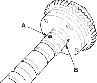
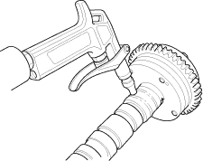
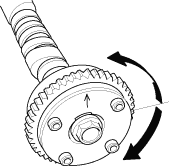

- Remove the cylinder head cover (see page 6-24).
- Remove the auto-tensioner (see page 6-21).
- Loosen the rocker arm adjusting screws (see step 2 on page 6-28).
- Remove the camshaft holder (see step 3 on page 6-28).
- Remove the intake camshaft.
- Check that the Variable Valve Timing Control (VTC) actuator is locked by turning the VTC actuator clockwise and counterclockwise. If the VTC actuator is not locked, replace the VTC actuator.
- Seal the advance holes (A) and retard holes (B) in the No. 1 camshaft journal with the tape.

- Punch a hole in the tape over one of the advance holes.

- Apply air to the advance hole to release the lock.

- Check that the VTC actuator moves smoothly. If the VTC actuator does not move smoothly, replace the VTC actuator.
